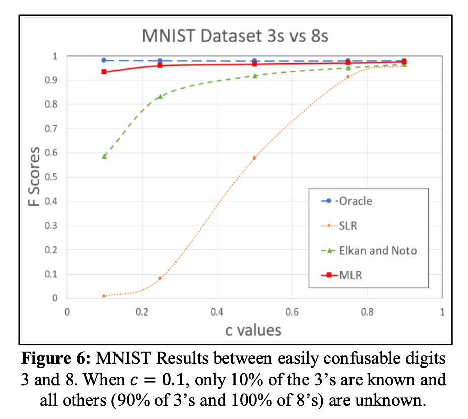

Give the model epistemology
Monday October 5, 2020
Jaskie has a nice paper with A Modified Logistic Regression for Positive and Unlabeled Learning. I like that it extends the usual logistic function in a way that captures the idea that labels may be incorrect. I wonder about extending the idea to multi-class softmax, and its relationship with label smoothing.
Here's the usual logistic function.
\[ \frac{ 1 }{ 1 + e^{-x} } \tag{1} \]
What Jaskie does is introduce another term in the denominator:
\[ \frac{ 1 }{ 1 + b^2 + e^{-x} } \tag{2} \]
The \( b \) term is squared to be non-negative, and learned during model fitting. The effect is that the maximum score for a positive example is less than one.
This makes sense in the positive unlabeled setting because Jaskie differentiates between whether an example is positive and whether an example is labeled positive. We only have the labels, and we know that some positive examples may not be positively labeled, so the probability based on the example that it is positively labeled is less than one.
It's somewhat surprising that this seems to work quite well, as demonstrated (for example) in Jaskie's Figure 6. (SLR is Standard Logistic Regression, MLR is Jaskie's Modified Logistic Regression.)

Let's speculate about extending this idea to the multi-class setting. First, just moving things around, Equation 2 becomes Equation 3.
\[ \frac{ e^x }{ (1 + b^2) e^x + 1 } \tag{3} \]
That form makes it easy to see the analogy between the usual logistic function and the multi-class softmax. Then the natural thing to suggest is Equation 4.
\[ \frac{ e^{x_i} }{ \sum (1 + b_i^2) e^{x_i} } \tag{4} \]
The semi-supervised setting in which there's a pile of unlabeled data in addition to the labeled data is pretty common, especially when labeling is expensive, and if something relatively simple like this were to give similar performance benefits to Jaskie's binary case, it could easily become very popular. (Assume you have a "garbage" class as well, in the open set sense.)
There's probably a similar extension to keep the negative example scores from going all the way to zero, if you think some of the true negatives might have incorrectly positive labels (or otherwise wrong labels in the multi-class setting).
I wonder about the relationship between these techniques and label smoothing... With smoothed labels you still have fixed (or at least sort of balanced) target probabilities, whereas the above techniques allow learning where the targets should be... But I think you wouldn't get the limits on logit growth, with the above techniques... It would be neat if the above techniques gave you good calibration and informative logits in the distillation sense. Hmm!